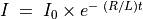

RL ട്രാൻഷിയൻറ് റെസ്പോൺസ്¶
ഒരു ഇൻഡേക്ടറിലേക്ക് സീരീസിൽ ഘടിപ്പിച്ചിരിക്കുന്ന റെസിസ്റ്ററിലൂടെ ഒരു വോൾട്ടേജ് സ്റ്റെപ് കൊടുക്കുമ്പോൾ ഇൻഡക്റ്ററിന്റെ വോൾട്ടേജിലുണ്ടാവുന്ന വ്യതിയാനമാണ് നാം അളക്കാൻ ശ്രമിക്കുന്നത്.

- 10 മില്ലിഹെൻറി ഇൻഡക്റ്ററും 1000 ഓം റെസിസ്റ്ററും ബ്രെഡ്ബോർഡിൽ ഉറപ്പിക്കുക
- രണ്ടും ചേരുന്ന ഭാഗം A1 ലേക്ക് ഘടിപ്പിക്കുക.
- റെസിസ്റ്ററിന്റെ മറ്റേയറ്റം OD1ലേക്ക് ഘടിപ്പിക്കുക.
- ഇൻഡക്റ്ററിന്റെ മറ്റേയറ്റം ഗ്രൗണ്ടിലേക്ക് ഘടിപ്പിക്കുക.
- സ്റ്റെപ് വോൾട്ടേജ് നൽകാനുള്ള ബട്ടൺ അമർത്തുക
- 10 മില്ലിഹെൻറി ഇൻഡക്റ്ററിനു പകരം 3000 ചുറ്റുള്ള കോയിൽ ഉപയോഗിച്ച് പരീക്ഷണം ആവർത്തിക്കുക
കപ്പാസിറ്റർ ഡിസ്ചാർജ് ചെയ്യുമ്പോൾ  എന്ന സമവാക്യമനുസരിച്ചാണ് വോൾട്ടേജ് മാറുന്നത്. ഗ്രാഫിനെ ഈ സമവാക്യവുമായി FIT ചെയ്ത് R/Lഉം അതിൽനിന്ന് ഇൻഡക്റ്റൻസും കണ്ടുപിടിക്കാം. കൊടുക്കുന്ന വോൾട്ടേജ് വോൾട്ടിൽ നിന്നും പൂജ്യത്തിലേക്ക് പോകുമ്പോൾ ഇൻഡക്ടറിന്റെ വോൾട്ടേജ് പെട്ടന്ന് നെഗറ്റീവായി മാറുകയും പിന്നീട് ക്രമേണ പൂജ്യത്തിലേക്കു വരികയുമാണ് ചെയ്യുന്നത്. നെഗറ്റീവ് വോൾട്ടേജ് നാം അപ്ലൈ ചെയ്യുന്നില്ല. ഇണ്ടാക്റ്ററിൽ പ്രേരിതമാവുന്ന ബാക്ക് EMF ആണിതിന് കാരണം.

കിറ്റിൽ ഉൾപ്പെടുത്തിയിട്ടുള്ള രണ്ടു കോയിലുകളുടെയും ഇൻഡക്റ്റൻസ് അളക്കുക. രണ്ടും സീരീസിൽ ഘടിപ്പിച്ച് മൊത്തം ഇൻഡക്റ്റൻസ് അളക്കുക. ഇൻഡക്ടറുകൾ വ്യത്യസ്തരീതികളിൽ ചേർത്തുവെച്ചുകൊണ്ട് അളവുകൾ ആവർത്തിക്കുക. മ്യുച്വൽ ഇൻഡക്റ്റൻസ് ഇവയിൽ നിന്നും കണ്ടുപിടിക്കാം.